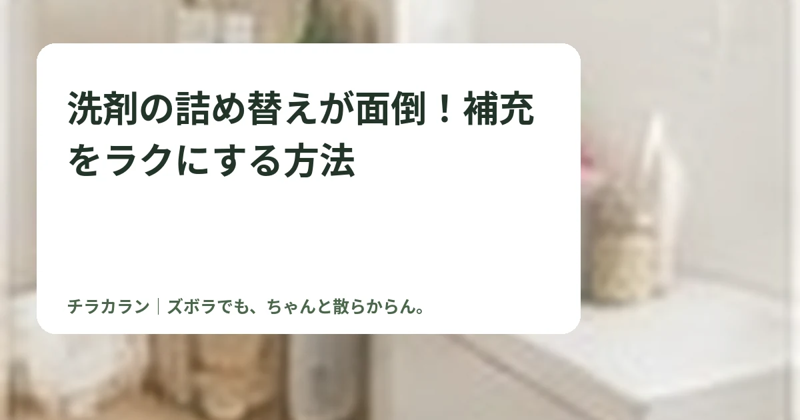

洗剤の詰め替えが面倒！補充をラクにする方法
洗剤の詰め替えが面倒なら、大容量化だけでなく自動投入や補充場所の見直しで、詰め替え回数と移動を減らせます。

結論：詰め替え作業そのものより「回数」と「移動」を減らす
洗剤をこぼさず補充するのは地味に面倒です。まず詰め替え頻度を減らせないか考えます。
自動投入があるなら活用する
対応する洗濯機なら、洗剤と柔軟剤をまとめて入れておける自動投入は毎回量る手間を減らせます。使用する洗剤に合わせて投入量の設定を確認します。

ストックは洗濯機の近くへ
別室から詰め替えを持ってくる運用だと、補充を後回しにしがちです。洗面・ランドリー内に1個だけ予備を置くと、その場で交換できます。
大容量は持ちやすさも確認
大容量パックは回数を減らせますが、重すぎると注ぐのが大変です。キャップ付きや注ぎやすい容器など、自分が扱いやすい形を選びます。

まとめ
詰め替えを上手にするより、詰め替える回数を減らす方がチラカラン向き。自動投入・ストック位置・容量の3つから見直してみましょう。
チラカランの考え方
頑張る回数を増やすより、頑張らなくても回る仕組みを。